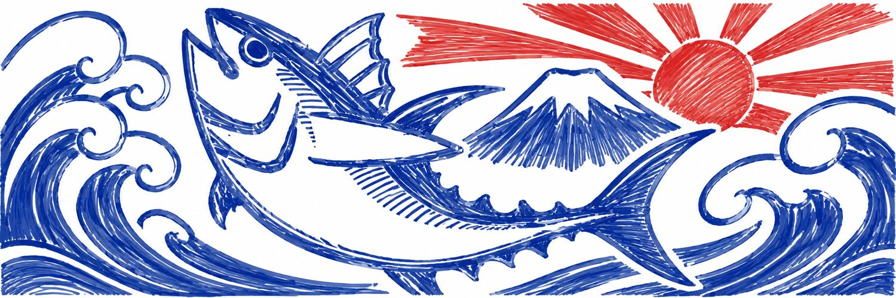

 MIURA A-TEI · 三浦A邸
MIURA A-TEI · 三浦A邸
家守の おすすめマップ
三崎・城ヶ島の、ごはんと買い物のお店です。気になるお店を押すと、地図の場所と、ひとことが見られます。
下書きです。確認中のお店を含みます。営業時間などは、変わっていることがあります。
番号はリストと同じです。白い丸の数字は、重なっているお店の数です（押すと広がります）。
お店リスト
営業時間・定休日は変わることがあります。お出かけの前に、お店の情報もご確認ください。地図は © OpenStreetMap contributors.